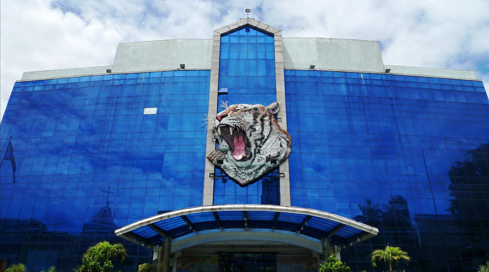

Announcement
Road closures, reroutes & warnings from the TPMO
Loading announcements…
Every road accident recorded by the City Traffic Planning and Management Office — mapped inside the city's 27 barangay boundaries, analysed for hotspots, and forecast a month ahead.
Road closures, reroutes & warnings from the TPMO
What the accident records say about the city and each barangay
Every recorded road accident plotted on the official barangay boundaries of Mandaluyong — filter by barangay or date to see where and when accidents happen most.
Loading city data…
Ang mga numero ay galing sa mga aksidenteng naitala sa MandaSafe, kaya nagbabago ang mapa kapag may bagong datos.
Computed from the accidents and baseline data the administrators record — updated the moment new data comes in.
Ang mga ito ay tantya lamang, hindi siguradong mangyayari. Para sa lahat ng barangay at sa mas malayong forecast, mag-sign in at buksan ang Forecast page.
A free MandaSafe account opens the full set of tools the city uses to follow road accidents — all read-only, all updated as soon as the TPMO records something new.
The city at a glance: total and latest-month accidents, the monthly trend, the latest reports, and every barangay ranked by how many accidents it has.
Every accident pinned where it happened. Filter by barangay or date, switch on the heatmap, and click a pin for its date, time and severity.
Where accidents cluster most, found by kernel density estimation, with all 27 barangays ranked from highest to lowest risk.
How many accidents to expect next month — or up to 12 months ahead — for the city and for each barangay, with a risk score and the reason behind every prediction.
One score from 0 to 100 for how safe Mandaluyong’s roads are lately, broken down by accident frequency, spread and severity.
A notification bell for new accidents and new hotspots, and your own profile where you can update your name, email and contact number.
Charts that turn the records into answers — when accidents rise, where they concentrate, how serious they are, and where they are heading. Hover over any chart to see the exact numbers.

Loading the latest figures…